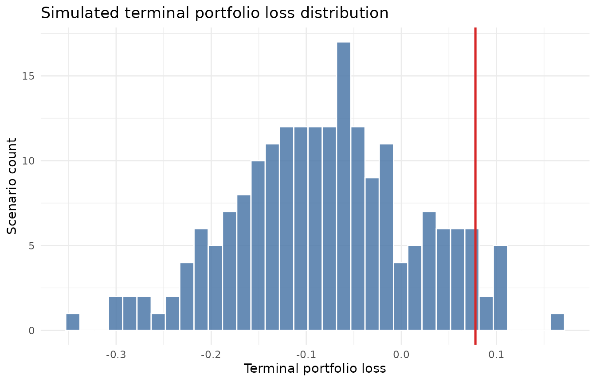
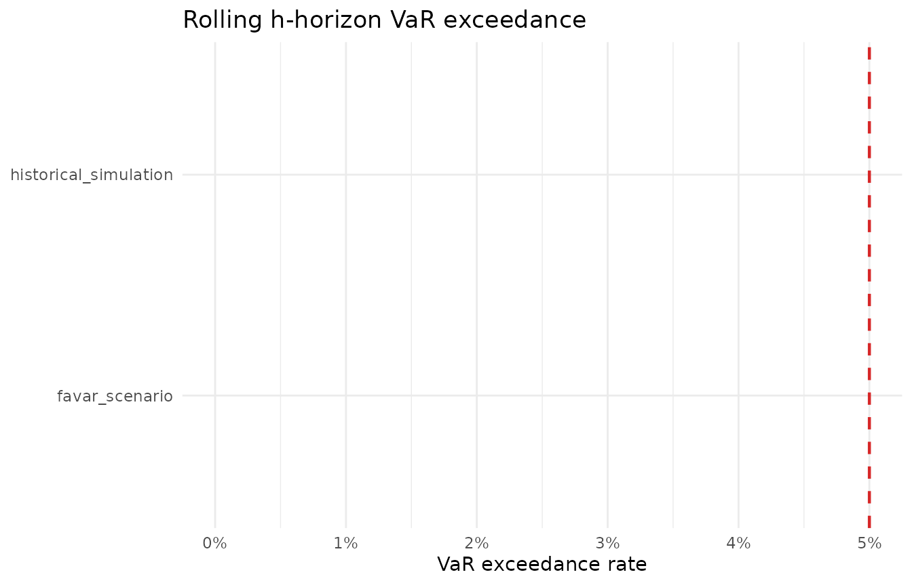

A Tour of scenario2risk
scenario2risk.RmdWelcome! Here is everything behind scenario2risk.
Rather than treating risk as a purely historical summary, the package was built around the idea that downside portfolio risk can be studied through macro-financial scenarios.
Why this package?
Many applications stop at one of two extremes:
- simple historical summaries with little economic structure
- complex risk engines that are hard to explain and harder to package
scenario2risk sits in the middle. It uses a
factor-augmented VAR framework to connect macro conditions with asset
returns, but exposes that model through a small set of user-facing
functions.
Design motivation
The package was created around three practical design ideas:
- Macro conditions matter for portfolio risk, so the model should accept a flexible set of macro predictors instead of only historical asset returns.
- Users usually care about portfolio loss summaries such as VaR and expected shortfall, not only raw simulated return paths.
- A compact package should still provide model checking, so the scenario-based VaR output can be compared against realized rolling losses.
This leads to two core workflows:
-
portfolio_risk()for scenario-based terminal-loss measurement -
model_check()for rolling VaR exceedance comparisons
Package assumptions and built-in choices
Some parts of the package are intentionally flexible, while others are fixed by design.
Flexible part: macro predictors
The macro_data input can contain any set of numeric
monthly predictor series, as long as:
- there is a
datecolumn - the remaining predictor columns are numeric
- there are enough overlapping monthly observations after alignment
This means users can include yield spreads, inflation measures, labor-market variables, production indicators, sentiment variables, or other macro-financial series they believe are informative.
Fixed part: asset universe
The portfolio side of the package is fixed to three asset categories:
equitybondcash
That fixed structure keeps the package simple and makes portfolio aggregation and model checking easier to explain. In practice, this means the return input must always contain:
equity_returnbond_returncash_return
and the portfolio weights input must contain one row for each of those three assets.
What should the input data look like?
The package works with three input tables:
macro_datareturn_dataportfolio
macro_data
macro_data should be a data frame with:
- one
datecolumn - one or more numeric macro predictor columns
- monthly observations
Below is the structure of the built-in example data:
| date | term_spread | credit_spread | gs10_change | infl_yoy | unrate | indpro_yoy | payroll_yoy | housing_yoy | consumer_sentiment | real_short_rate |
|---|---|---|---|---|---|---|---|---|---|---|
| 1991-01-01 | 0.0187 | 0.0141 | 0.0001 | 0.0565 | 0.064 | -0.0096 | -0.0013 | -0.4855 | 66.8 | 0.0057 |
| 1991-02-01 | 0.0191 | 0.0124 | -0.0024 | 0.0531 | 0.066 | -0.0258 | -0.0064 | -0.3285 | 70.4 | 0.0063 |
| 1991-03-01 | 0.0220 | 0.0116 | 0.0026 | 0.0482 | 0.068 | -0.0362 | -0.0098 | -0.2855 | 87.7 | 0.0109 |
return_data
return_data should be a data frame with:
- one
datecolumn equity_returnbond_returncash_return
These returns should be aligned at the same monthly frequency as the macro predictors.
| date | equity_return | bond_return | cash_return |
|---|---|---|---|
| 1991-01-01 | 0.0521 | -0.0148 | 0.0052 |
| 1991-02-01 | 0.0767 | -0.0062 | 0.0048 |
| 1991-03-01 | 0.0310 | -0.0130 | 0.0044 |
portfolio
portfolio should be a data frame with:
- one
assetcolumn - one
weightcolumn
The package expects exactly the three supported asset names and a fully invested long-only portfolio.
knitr::kable(demo_portfolio_weights, digits = 2)| asset | weight |
|---|---|
| equity | 0.55 |
| bond | 0.35 |
| cash | 0.10 |
Overall workflow
- Align macro predictors and asset returns by date.
- Extract a small number of macro factors using principal components.
- Fit a VAR model to the macro factors and asset returns.
- Simulate future scenario paths.
- Aggregate simulated asset returns into portfolio-level losses.
- Summarize downside risk or compare VaR exceedances.
The next two sections walk through the package’s main workflows.
Workflow 1: Estimate portfolio downside risk
We start by estimating scenario-based terminal-loss risk over a 12-month horizon.
risk <- portfolio_risk(
macro_data = demo_macro_data,
return_data = demo_return_data,
portfolio = demo_portfolio_weights,
horizon = 12,
n_scenarios = 200,
k = 2,
var_lag = 1,
seed = 123
)
risk
#> portfolio risk
#> --------------
#>
#> Terminal-loss risk metrics:
#> # A tibble: 1 × 5
#> mean_loss median_loss probability_of_loss var_95 es_95
#> <dbl> <dbl> <dbl> <dbl> <dbl>
#> 1 -0.0802 -0.0740 0.195 0.0779 0.102The returned object contains two main pieces:
-
risk_summary: a one-row table of risk metrics -
loss_distribution: one simulated terminal loss per scenari
Printing the returned object only gives us a risk summary.
The portfolio_risk() summary contains:
-
mean_loss: average simulated terminal loss -
median_loss: median simulated terminal loss -
probability_of_loss: share of scenarios with a positive loss -
var_95: 95% Value-at-Risk for terminal loss -
es_95: 95% Expected Shortfall
Together, these measures summarize both the center and the downside tail of the simulated loss distribution.
We can also visualize the simulated loss distribution:
plot_portfolio_risk(risk)
In that plot, the histogram shows the simulated distribution of terminal portfolio loss, and the vertical red line marks the estimated 95% VaR.
Workflow 2: Check rolling VaR exceedance
Scenario-based risk estimates are more useful when they are checked
against realized outcomes. The model_check() function
performs a rolling historical evaluation:
- at each forecast origin, the model is refit on the previous
windowmonths - future portfolio losses are simulated over the chosen
horizon - the resulting scenario-based VaR is compared with the realized forward loss
- the same comparison is repeated for a historical simulation benchmark
check <- model_check(
macro_data = demo_macro_data,
return_data = demo_return_data,
portfolio = demo_portfolio_weights,
horizon = 6,
n_scenarios = 50,
k = 2,
var_lag = 1,
seed = 123,
window = 120,
n_origins = 6
)
check
#> rolling model check
#> -------------------
#>
#> VaR exceedance rate:
#> # A tibble: 2 × 5
#> model var_95_exceedance expected_exceedance n_origins n_exceedances
#> <chr> <dbl> <dbl> <int> <int>
#> 1 favar_scenario 0 0.05 6 0
#> 2 historical_simu… 0 0.05 6 0The output reports the realized exceedance frequency for:
- the FAVAR scenario model
- the historical simulation benchmark
We can visualize that comparison:
plot_model_check(check)
The dashed red line marks the expected 5% exceedance rate for a 95% VaR model.
Notes on parameter choices
Several arguments control the behavior of the workflows:
-
horizon: forecast horizon in months -
n_scenarios: number of simulated scenario paths -
k: number of macro factors retained -
var_lag: lag length of the VAR -
window: rolling estimation window used inmodel_check() -
n_origins: number of rolling forecast origins used inmodel_check()
Limitations
The package intentionally keeps the problem simple. In particular:
- the asset universe is fixed to equity, bond, and cash
- the package is built around monthly data
- portfolio weights are long-only and fully invested
- the package is meant for clear scenario-based analysis, not full-scale risk infrastructure
These design choices make the package easier to explain, test, and use.